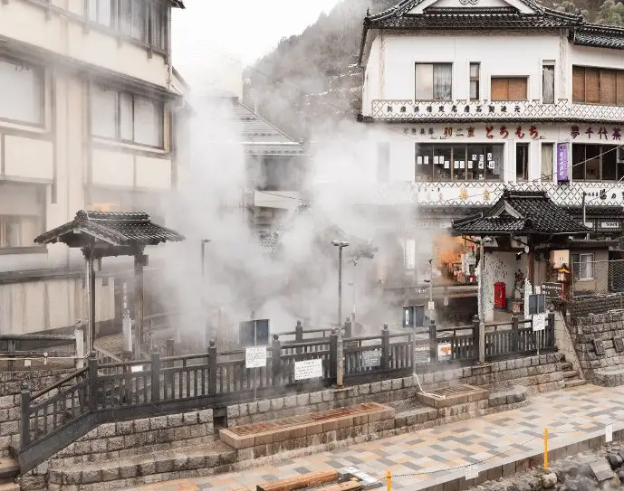

Shinonsen
Shinonsen · Hyogo
Shinonsen
Highlighted on the Hyogo map.

Stay
Yusen no Yado Yuamu
Quiet Yumura Onsen inn blending ryokan hospitality with hotel privacy and high-temperature springs
Asanoya
Yukemuri inn with four private spring sources and hot-spring water in every guest-room bath
Oyado Tomiya
Hillside Yumura ryokan with its own spring source and panoramic baths overlooking the town
Dining
Restaurant Kaede
Steakhouse serving ice-aged Tajima beef with individual cattle ID displayed in-house
Soba Roan Yumura
Soba shop and café-bar in Yumura serving lunch noodles then café and evening bar service
Onsen
Yumura Onsen
One of Japan’s hottest spring towns, long known as a beauty bath and toji resort
Shop
Tajima Beef Hamada
Yumura shop and eatery focused on Tajima beef products for takeaway and light meals
Sights
Yumura Onsen Townscape
Compact hot-spring street with steam vents and walking routes through Yu district